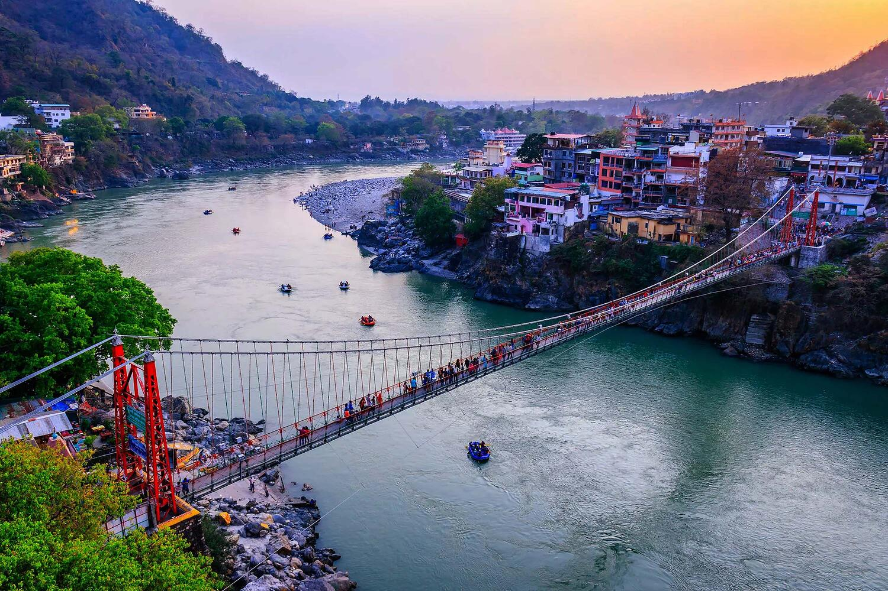
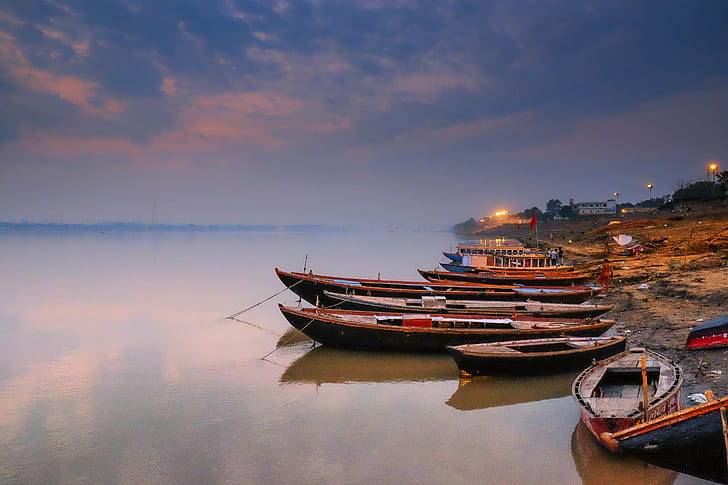

1.Ganga River
The Ganges is the largest river in India with a profound religious significance. It is known by several names, including Jahnavi, Gange, Shubhra, Sapteshwari, Nikita, Bhagirathi, Alaknanda, and Vishnupadi. Nothing can match the ever-lasting divinity of the holy River Ganga; the sacred river is a true mother by all means.
Bhagiratha was a legendary king of the Ikshvaku dynasty. He brought the River Ganga to Earth from the heavens because only shecould bestow nirvana to Bhagiratha’s ancestors who were cursed by Sage Kapila. After years of great penance, River Ganga descended on Earth and Lord Shiva agreed to channelize her flow. Therefore, River Ganga flowed from Lord Shiva’s hair. The place where the sacred river originated is known as Gangotri in present times, and since the river originated from Lord Shiva’s Jata (hair) it is also called Jatashankari

In Hinduism, the holy River Ganga is personified and personalized as the Goddess Ganga. The followers of the Hindu religion believe that bathing in the pious Ganga can help wash all sins. People also believe that a mere touch of the river can help attain moksha (salvation) and so the ashes of the dead are immersed in the sacred river.

Varanasi, Haridwar, Gangotri, Allahabad, and Rishikesh are the prime destinations that have great
religious
significance
for Hindu devotees. Allahabad and Haridwar are renowned for organizing Kumbh Mela, a grand religious
fair,
and Haridwar
is revered as the “Gateway to Heaven.” These beautiful cities located on the banks of Ganga are
visited by many travel
enthusiasts.